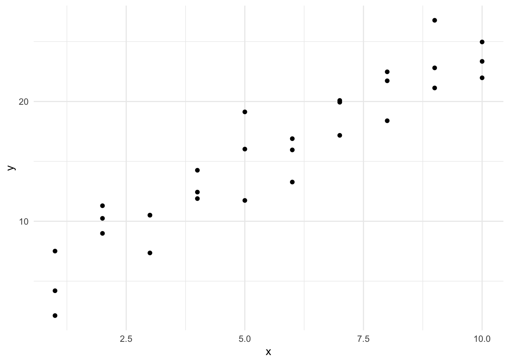
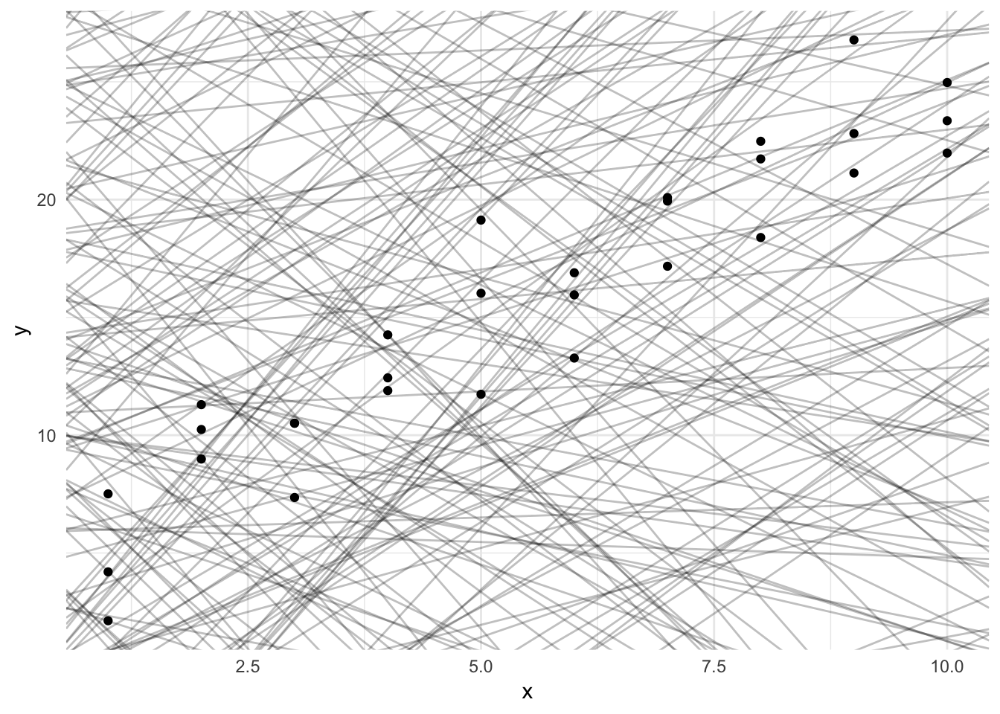
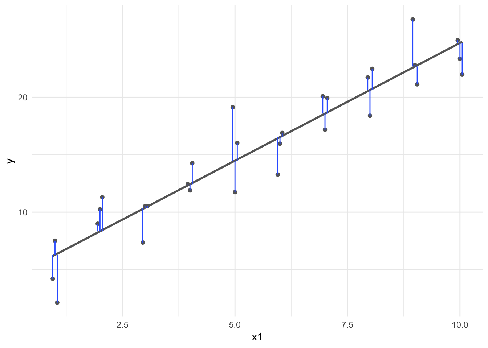

library(tidyverse)
library(broom)
library(modelr)
library(patchwork)
options(digits = 3)
set.seed(1234)
theme_set(theme_minimal())\[\newcommand{\E}{\mathrm{E}} \newcommand{\Var}{\mathrm{Var}} \newcommand{\Cov}{\mathrm{Cov}} \newcommand{\se}{\text{se}} \newcommand{\Lagr}{\mathcal{L}} \newcommand{\lagr}{\mathcal{l}}\]
Regression is a method for studying the relationship between a response variable \(Y\) and a covariate \(X\) (also known as the predictor variable or a feature). One way to summarize this relationship between \(X\) and \(Y\) is through a regression function:
\[r(x) = \E (Y | X = x) = \int y f(y|x) dy\]
Our goal is to estimate the regression function \(r(x)\) from the data of the form
\[(Y_1, X_1), \ldots, (Y_n, X_n) \sim F_{X,Y}\]
The simplest form of regression is when \(X_i\) is simple (one-dimensional) and \(r(x)\) is assumed to be linear:
\[r(x) = \beta_0 + \beta_1 x\]
This model is called the simple linear regression model. We make the further assumption that \(\Var (\epsilon_i | X = x) = \sigma^2\) does not depend on \(x\). Thus the linear regression model is:
\[Y_i = \beta_0 + \beta_1 X_i + \epsilon_i\]
where \(\E (\epsilon_i | X_i) = 0\) and \(\Var (\epsilon_i | X_i) = \sigma^2\). The unknown parameters in the model are the intercept \(\beta_0\) and the slope \(\beta_1\) and the variance \(\sigma^2\). Let \(\hat{\beta}_0\) and \(\hat{\beta}_1\) denote estimates of \(\beta_0\) and \(\beta_1\). The fitted line is
\[\hat{r}(x) = \hat{\beta}_0 + \hat{\beta}_1 x\]
The predicted values or fitted values are
\[\hat{Y}_i = \hat{r}(X_i)\]
and the residuals are defined as
\[\hat{\epsilon}_i = Y_i - \hat{Y}_i = Y_i - (\hat{\beta}_0 + \hat{\beta}_1 x)\]
The residual sum of squares or RSS measures how well the line fits the data. It is defined by
\[RSS = \sum_{i=1}^n \hat{\epsilon}_i^2\]
What is an appropriate way to estimate the \(\beta\)s? We could fit many lines to this data, some better than others.
ggplot(sim1, aes(x, y)) +
geom_point()
models <- tibble(
a1 = runif(250, -20, 40),
a2 = runif(250, -5, 5)
)
ggplot(sim1, aes(x, y)) +
geom_abline(aes(intercept = a1, slope = a2), data = models, alpha = 1/4) +
geom_point()
We should seek estimators with some set of desired qualities. Classically, two desired qualities for an estimator are unbiasedness and efficiency.
The least squares estimates are the values \(\hat{\beta}_0, \hat{\beta}_1\) that minimize the RSS.
\[\min(RSS)\]
This requires a bit of calculus to solve.
\[ \begin{aligned} RSS &= \sum_{i=1}^n \hat{\epsilon}_i^2 \\ \sum_{i=1}^n (\hat{\epsilon}_i)^2 &= \sum_{i=1}^n (Y_i - (\beta_0 + \beta_1 X_i))^2\\ f(\beta_0, \beta_1 | x_i, y_i) & = \sum_{i=1}^n (Y_i - \beta_0 - \beta_1 X_i )^2\\ \dfrac{\partial{ f(\beta_0, \beta_1 | x_i, y_i)}}{\partial \beta_0} & = -2 (\sum_{i=1}^n (Y_i - \beta_0 - \beta_1 X_i))\\ & = \sum_{i=1}^n -2Y_i + 2\beta_0 + 2\beta_1 X_i\\ 0 & = \sum_{i=1}^n -2Y_{i} + 2\beta_0 + 2\beta_1 X_i\\ 0 & = -2 \sum_{i=1}^n Y_{i} + 2\sum_{i=1}^n \beta_0 + 2\beta_1 \sum_{i=1}^n X_i\\ 0 & = -2 \sum_{i=1}^n Y_{i} + (n \times 2\beta_0) + 2\beta_1 \sum_{i=1}^n X_i\\ n \times 2\beta_0 & = 2 \sum_{i=1}^n Y_i - 2\beta_1 \sum_{i=1}^n X_i\\ \hat \beta_0 & = \dfrac{2 \sum_{i=1}^n Y_i}{2n} - \dfrac{2\beta_1 \sum_{i=1}^n X_i}{2n}\\ & = \dfrac{\sum_{i=1}^n Y_i}{n} - \beta_1\dfrac{ \sum_{i=1}^n X_i}{n}\\ \hat \beta_0 & = \bar{Y}_n - \beta_1 \bar{X}_n \end{aligned} \]
\[ \begin{aligned} \dfrac{\partial{ f(\beta_0, \beta_1 | x_i, y_i)}}{\partial \beta_1} & = \sum_{i=1}^n -2X_i(Y_i - \beta_0 - \beta_1 X_i) \\ & = \sum_{i=1}^n -2Y_iX_i + 2\beta_0X_i + 2\beta_1 X_i^2\\ 0 & = \sum_{i=1}^n -2Y_iX_i + 2\beta_0 \sum_{i=1}^nX_i + 2\beta_1 \sum_{i=1}^n X_i^2\\ & = \sum_{i=1}^n -2Y_iX_i + 2 (\bar{Y}_n - \beta_1 \bar{X}_n) \sum_{i=1}^nX_i + 2\beta_1 \sum_{i=1}^n X_i^2\\ & = \sum_{i=1}^n -2Y_iX_i + 2\bar{Y}_n \sum_{i=1}^nX_i - 2\beta_1 \bar{X}_n\sum_{i=1}^nX_i + 2\beta_1 \sum_{i=1}^n X_i^2\\ 2\beta_1 \sum_{i=1}^n X_i^2 - 2\beta_1 \bar{X}_n\sum_{i=1}^nX_i & = \sum_{i=1}^n 2Y_iX_i - 2\bar{Y}_n \sum_{i=1}^nX_i\\ \beta_1 ( \sum_{i=1}^n X_i^2 - \bar{X}_n\sum_{i=1}^nX_i ) & = \sum_{i=1}^n Y_iX_i - \bar{Y}_n \sum_{i=1}^nX_i\\ \hat \beta_1 & = \dfrac{ \sum_{i=1}^n Y_iX_i - \bar{Y}_n \sum_{i=1}^nX_i}{ \sum_{i=1}^n X_i^2 - \bar{X}_n\sum_{i=1}^nX_i}\\ \hat \beta_0 & = \bar{Y}_n - \hat{\beta}_1 \bar{X}_n \end{aligned} \]
Recall that we also need an estimate for \(\sigma^2\). An unbiased estimate turns out to be
\[\hat{\sigma}^2 = \left( \frac{1}{n - 2} \right) \sum_{i=1}^n \hat{\epsilon}_i^2\]
sim1_mod <- lm(y ~ x, data = sim1)
dist2 <- sim1 %>%
add_predictions(sim1_mod) %>%
mutate(
dodge = rep(c(-1, 0, 1) / 20, 10),
x1 = x + dodge
)
ggplot(dist2, aes(x1, y)) +
geom_smooth(method = "lm", color = "grey40", se = FALSE) +
geom_point(color = "grey40") +
geom_linerange(aes(ymin = y, ymax = pred), color = "#3366FF")
\[\mathbf{Y} = \mathbf{X} \boldsymbol{\beta} + \mathbf{u}\]
\(k \in \{1,\ldots,K \}\)
\[Y_i = \beta_0 + \beta_1X_{1i} + \beta_2 X_{2i} + \ldots + \beta_K X_{Ki} + u_i\]
\[ \begin{aligned} \mathbf{u} &= \mathbf{Y} - \mathbf{X}\boldsymbol{\beta} \\ \mathbf{u}'\mathbf{u} &= (\mathbf{Y} - \mathbf{X}\boldsymbol{\beta})'(\mathbf{Y} - \mathbf{X}\boldsymbol{\beta}) \\ &= \mathbf{Y'Y} - 2 \boldsymbol{\beta}' \mathbf{X'Y'} + \boldsymbol{\beta}' \mathbf{X'X} \boldsymbol{\beta} \end{aligned} \]
\[ \begin{aligned} \frac{\partial\mathbf{u}' \mathbf{u}}{\partial \boldsymbol{\beta}} &= -2\mathbf{X'Y} + 2\boldsymbol{X'X\beta} \\ 0 &= -2\mathbf{X'Y} + 2\mathbf{X'X} \boldsymbol{\beta} \\ 0 &= -\mathbf{X'Y} + \mathbf{X'X}\boldsymbol{\beta} \\ \mathbf{X'Y} &= \mathbf{X'X\beta} \\ (\mathbf{X'X})^{-1}\mathbf{X'Y} &= (\mathbf{X'X})^{-1}\mathbf{X'X}\boldsymbol{\beta} \\ (\mathbf{X'X})^{-1}\mathbf{X'Y} &= \mathbf{I}\boldsymbol{\beta} \\ (\mathbf{X'X})^{-1}\mathbf{X'Y} &= \boldsymbol{\beta} \\ \end{aligned} \]
Pre-multiply by the inverse to get the final equation
Premultiplying \(\mathbf{X'Y}\) by \((\mathbf{X'X})^{-1}\): dividing \(\mathbf{X'Y}\) by \(\mathbf{X'X}\)
Suppose we add the assumption that \(\epsilon_i | X_i \sim N(0, \sigma^2\), that is,
\[Y_i | X_i \sim N(\mu_i, \sigma^2)\]
where \(\mu_i = \beta_0 + \beta_1 X_i\). This means each \(i\)th observation has a systematic mean that varies based on the value of \(X_i\). The likelihood function is
\[ \begin{align} \prod_{i=1}^n f(X_i, Y_i) &= \prod_{i=1}^n f_X(X_i) f_{Y | X} (Y_i | X_i) \\ &= \prod_{i=1}^n f_X(X_i) \times \prod_{i=1}^n f_{Y | X} (Y_i | X_i) \\ &= \Lagr_1 \times \Lagr_2 \end{align} \]
where
\[ \begin{align} \Lagr_1 &= \prod_{i=1}^n f_X(X_i) \\ \Lagr_2 = \prod_{i=1}^n f_{Y | X} (Y_i | X_i) \end{align} \]
\(\Lagr_1\) does not involve the parameters \(\beta_0, \beta_1\). Instead we can focus on the second term \(\Lagr_2\) which is called the conditional likelihood, given by
\[ \begin{align} \Lagr_2 &\equiv \Lagr(\beta_0, \beta_1, \sigma^2) \\ &= \prod_{i=1}^n f_{Y | X}(Y_i | X_i) \\ &\propto \frac{1}{\sigma} \exp \left\{ -\frac{1}{2\sigma^2} \sum_{i=1}^n (Y_i - \mu_i)^2 \right\} \end{align} \]
The conditional log-likelihood is
\[\lagr(\beta_0, \beta_1, \sigma^2) = -n \log(\sigma) - \frac{1}{2\sigma^2} \left( Y_i - (\beta_0 + \beta_1 X_i) \right)^2\]
To fine the MLE of \((\beta_0, \beta_1)\), we maximize \(\lagr(\beta_0, \beta_1, \sigma^2)\). This is equivalent to minimizing the RSS
\[RSS = \sum_{i=1}^n \hat{\epsilon}_i^2 = \sum_{i=1}^n \left( Y_i - (\hat{\beta}_0 + \hat{\beta}_1 x) \right)\]
Therefore, under the assumption that the residuals are distributed normally, the least squares estimator is also the maximum likelihood estimator.
In regression problems, we usually focus on the properties of the estimators conditional on \(X^n = (X_1, \ldots, X_n)\). Thus we state the means and variances as conditional means and variances.
Let \(\hat{\beta}^T = (\hat{\beta}_0, \hat{\beta}_1)^T\) denote the least squares estimators (\(^T\)) simply indicates the vector is transposed to be a column vector. Then
\[ \begin{align} \E (\hat{\beta} | X^n) &= \begin{pmatrix} \beta_0 \\ \beta_1 \end{pmatrix} \\ \Var (\hat{\beta} | X^n) &= \frac{\sigma^2}{n s_X^2} \begin{pmatrix} \frac{1}{n} \sum_{i=1}^n X_i^2 & -\bar{X}^n \\ -\bar{X}^n & 1 \end{pmatrix} \end{align} \]
where
\[s_X^2 = \frac{1}{n} \sum_{i=1}^n (X_i - \bar{X}_n)^2\]
The estimated standard errors of \(\hat{\beta}_0, \hat{\beta}_1\) are obtained by taking the square roots of the corresponding diagonal terms of \(\Var (\hat{\beta} | X^n)\) and inserting the estimate \(\hat{\sigma}\) for \(\sigma\). Thus,
\[ \begin{align} \widehat{\se} (\hat{\beta}_0) &= \frac{\hat{\sigma}}{s_X \sqrt{n}} \sqrt{\frac{ \sum_{i=1}^n X_i^2}{n}} \\ \widehat{\se} (\hat{\beta}_1) &= \frac{\hat{\sigma}}{s_X \sqrt{n}} \end{align} \]
Under appropriate conditions, we have
Consistency
\[\hat{\beta}_0 \xrightarrow{P} \beta_0 \, \text{and} \, \hat{\beta}_1 \xrightarrow{P} \beta_1\]
Asymptotic normality
\[\frac{\hat{\beta}_0 - \beta_0}{\widehat{\se}(\hat{\beta}_0)} \leadsto N(0,1) \, \text{and} \, \frac{\hat{\beta}_1 - \beta_1}{\widehat{\se}(\hat{\beta}_1)} \leadsto N(0,1)\]
Approximate \(1 - \alpha\) confidence intervals for \(\beta_0\) and \(\beta_1\) are
\[\hat{\beta}_0 \pm z_{\alpha / 2} \widehat{\se}(\hat{\beta}_0) \, \text{and} \, \hat{\beta}_1 \pm z_{\alpha / 2} \widehat{\se}(\hat{\beta}_1)\]
The Wald test for testing \(H_0: \beta_1 = 0\) versus \(H_1: \beta_1 \neq 0\) is reject \(H_0\) if \(\mid W \mid > z_{\alpha / 2}\) where
\[W = \frac{\hat{\beta}_1}{\widehat{\se}(\hat{\beta}_1)}\]
devtools::session_info()## Session info -------------------------------------------------------------## setting value
## version R version 3.5.1 (2018-07-02)
## system x86_64, darwin15.6.0
## ui X11
## language (EN)
## collate en_US.UTF-8
## tz America/Chicago
## date 2018-11-29## Packages -----------------------------------------------------------------## package * version date source
## assertthat 0.2.0 2017-04-11 CRAN (R 3.5.0)
## backports 1.1.2 2017-12-13 CRAN (R 3.5.0)
## base * 3.5.1 2018-07-05 local
## bindr 0.1.1 2018-03-13 CRAN (R 3.5.0)
## bindrcpp 0.2.2 2018-03-29 CRAN (R 3.5.0)
## broom * 0.5.0 2018-07-17 CRAN (R 3.5.0)
## cellranger 1.1.0 2016-07-27 CRAN (R 3.5.0)
## cli 1.0.0 2017-11-05 CRAN (R 3.5.0)
## colorspace 1.3-2 2016-12-14 CRAN (R 3.5.0)
## compiler 3.5.1 2018-07-05 local
## crayon 1.3.4 2017-09-16 CRAN (R 3.5.0)
## datasets * 3.5.1 2018-07-05 local
## devtools 1.13.6 2018-06-27 CRAN (R 3.5.0)
## digest 0.6.18 2018-10-10 cran (@0.6.18)
## dplyr * 0.7.8 2018-11-10 cran (@0.7.8)
## evaluate 0.11 2018-07-17 CRAN (R 3.5.0)
## forcats * 0.3.0 2018-02-19 CRAN (R 3.5.0)
## ggplot2 * 3.1.0 2018-10-25 cran (@3.1.0)
## glue 1.3.0 2018-07-17 CRAN (R 3.5.0)
## graphics * 3.5.1 2018-07-05 local
## grDevices * 3.5.1 2018-07-05 local
## grid 3.5.1 2018-07-05 local
## gtable 0.2.0 2016-02-26 CRAN (R 3.5.0)
## haven 1.1.2 2018-06-27 CRAN (R 3.5.0)
## hms 0.4.2 2018-03-10 CRAN (R 3.5.0)
## htmltools 0.3.6 2017-04-28 CRAN (R 3.5.0)
## httr 1.3.1 2017-08-20 CRAN (R 3.5.0)
## jsonlite 1.5 2017-06-01 CRAN (R 3.5.0)
## knitr 1.20 2018-02-20 CRAN (R 3.5.0)
## lattice 0.20-35 2017-03-25 CRAN (R 3.5.1)
## lazyeval 0.2.1 2017-10-29 CRAN (R 3.5.0)
## lubridate 1.7.4 2018-04-11 CRAN (R 3.5.0)
## magrittr 1.5 2014-11-22 CRAN (R 3.5.0)
## memoise 1.1.0 2017-04-21 CRAN (R 3.5.0)
## methods * 3.5.1 2018-07-05 local
## modelr * 0.1.2 2018-05-11 CRAN (R 3.5.0)
## munsell 0.5.0 2018-06-12 CRAN (R 3.5.0)
## nlme 3.1-137 2018-04-07 CRAN (R 3.5.1)
## patchwork * 0.0.1 2018-09-06 Github (thomasp85/patchwork@7fb35b1)
## pillar 1.3.0 2018-07-14 CRAN (R 3.5.0)
## pkgconfig 2.0.2 2018-08-16 CRAN (R 3.5.1)
## plyr 1.8.4 2016-06-08 CRAN (R 3.5.0)
## purrr * 0.2.5 2018-05-29 CRAN (R 3.5.0)
## R6 2.3.0 2018-10-04 cran (@2.3.0)
## Rcpp 1.0.0 2018-11-07 cran (@1.0.0)
## readr * 1.1.1 2017-05-16 CRAN (R 3.5.0)
## readxl 1.1.0 2018-04-20 CRAN (R 3.5.0)
## rlang 0.3.0.1 2018-10-25 CRAN (R 3.5.0)
## rmarkdown 1.10 2018-06-11 CRAN (R 3.5.0)
## rprojroot 1.3-2 2018-01-03 CRAN (R 3.5.0)
## rstudioapi 0.7 2017-09-07 CRAN (R 3.5.0)
## rvest 0.3.2 2016-06-17 CRAN (R 3.5.0)
## scales 1.0.0 2018-08-09 CRAN (R 3.5.0)
## stats * 3.5.1 2018-07-05 local
## stringi 1.2.4 2018-07-20 CRAN (R 3.5.0)
## stringr * 1.3.1 2018-05-10 CRAN (R 3.5.0)
## tibble * 1.4.2 2018-01-22 CRAN (R 3.5.0)
## tidyr * 0.8.1 2018-05-18 CRAN (R 3.5.0)
## tidyselect 0.2.5 2018-10-11 cran (@0.2.5)
## tidyverse * 1.2.1 2017-11-14 CRAN (R 3.5.0)
## tools 3.5.1 2018-07-05 local
## utils * 3.5.1 2018-07-05 local
## withr 2.1.2 2018-03-15 CRAN (R 3.5.0)
## xml2 1.2.0 2018-01-24 CRAN (R 3.5.0)
## yaml 2.2.0 2018-07-25 CRAN (R 3.5.0)This work is licensed under the CC BY-NC 4.0 Creative Commons License.